- 年份
- —
- 品类
- 咖啡店
- 做了什么
01 / 思路
调色盘 + 咖啡杯
符号由调色盘和咖啡杯组合而成，再用圆形网格校正轮廓。口号是「浓缩的灵感」和「杯儿有艺思！」。


02 / 系统
字、色和一组表情
中文字标“灵感杯子”逐笔调整了细节；英文用 Pacifico，中文辅助字体用喜脉喜欢体。主色是红和米白，配一张粉色和花树照片的情绪板。杯子角色可以和中英文字标横排、竖排组合。

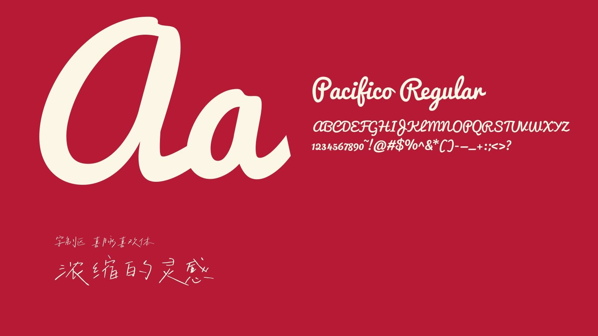
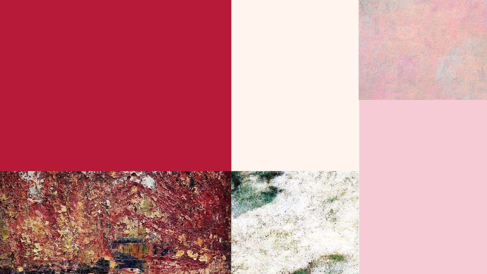
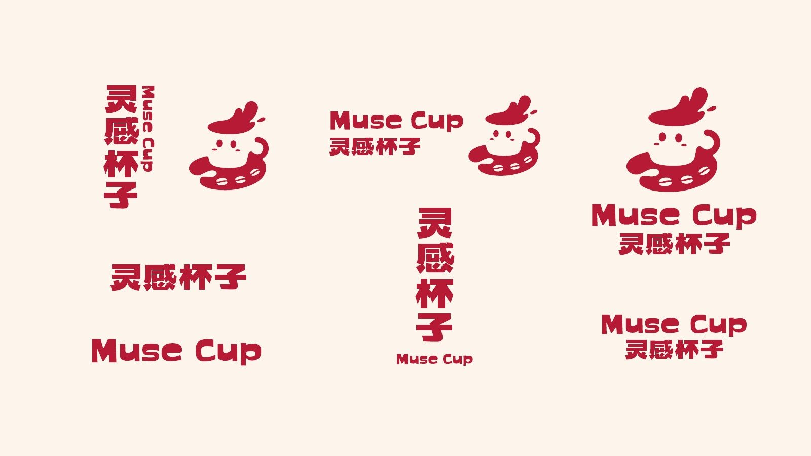
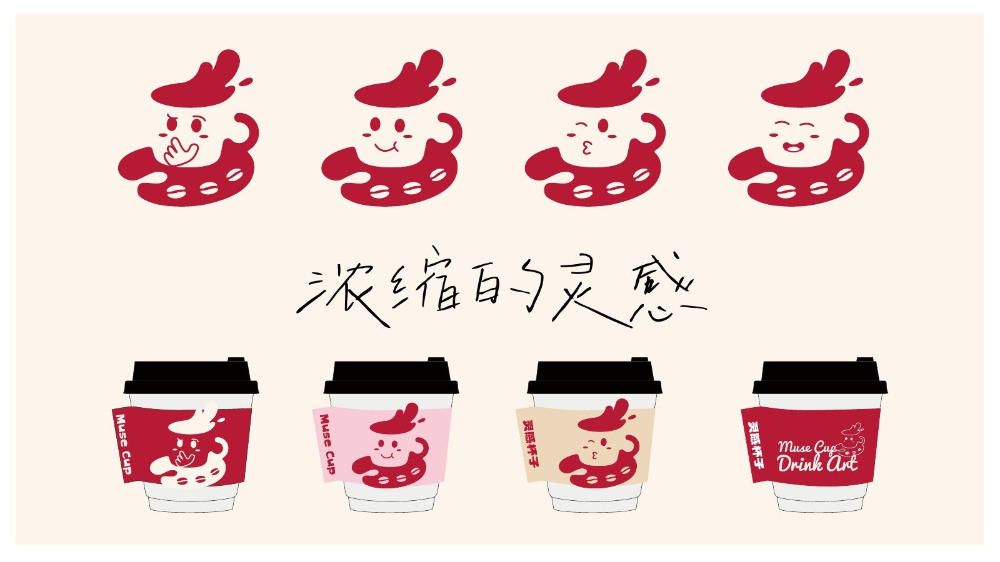
03 / 落地
从门头到马克杯
识别落到门头灯箱、圆形挑牌、集点卡和名片、杯子与杯套、包装、贴纸、海报、徽章和马克杯，以及整个店面立面。
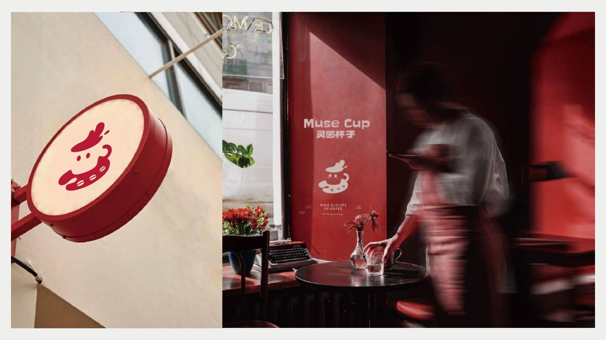
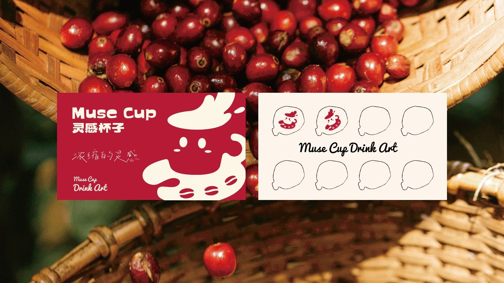
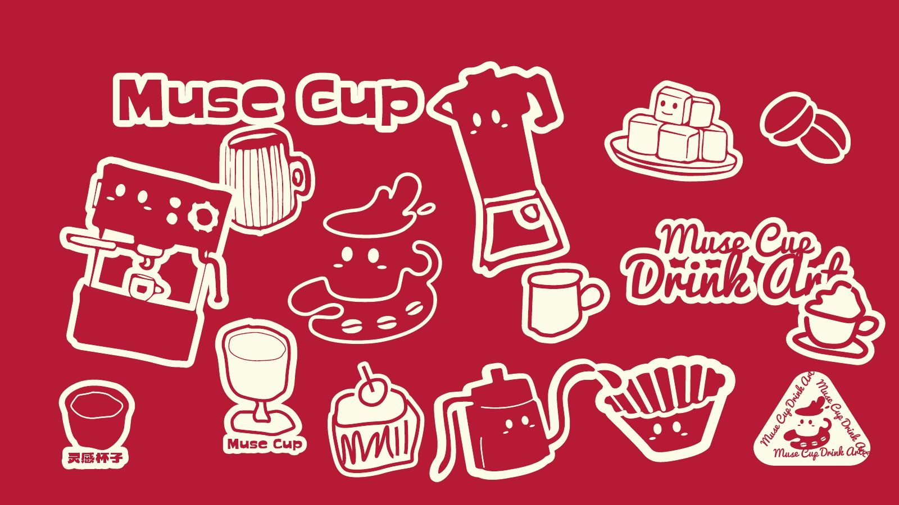
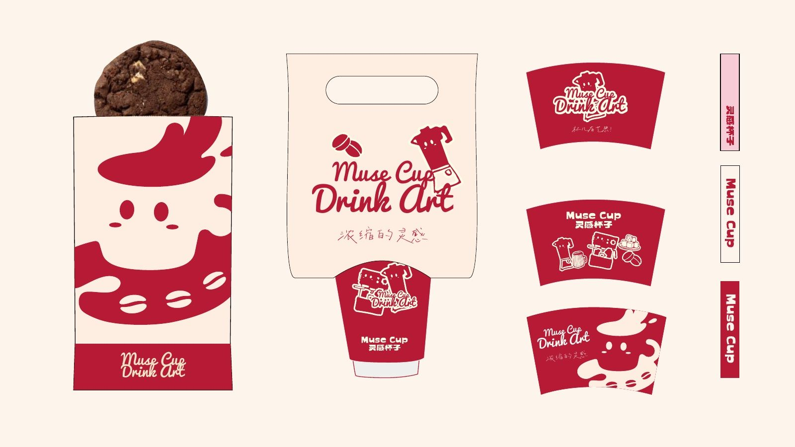
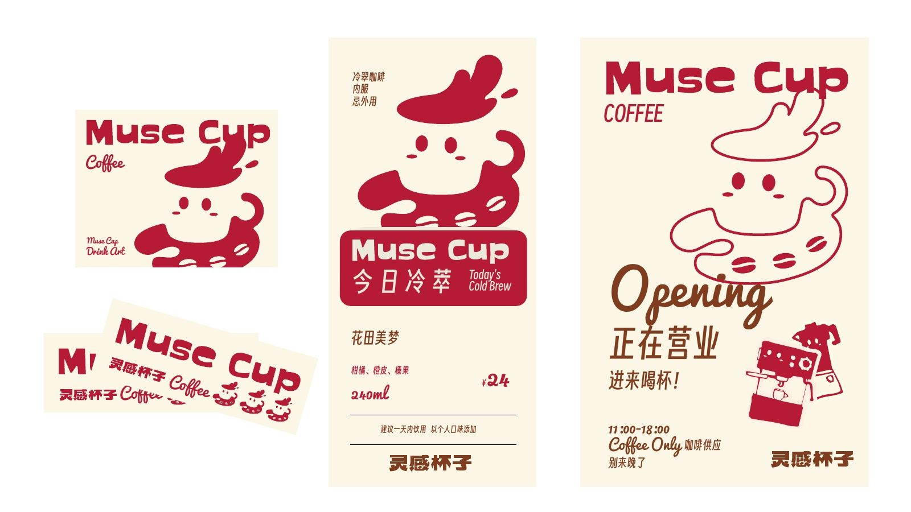
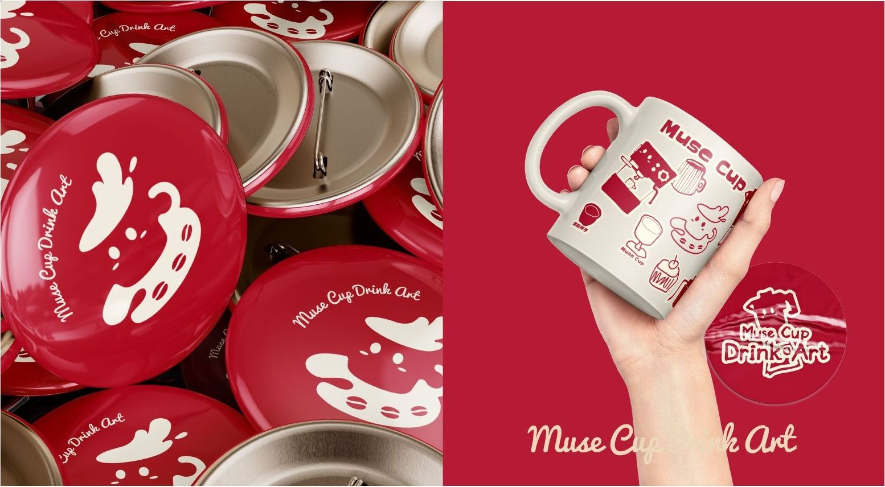
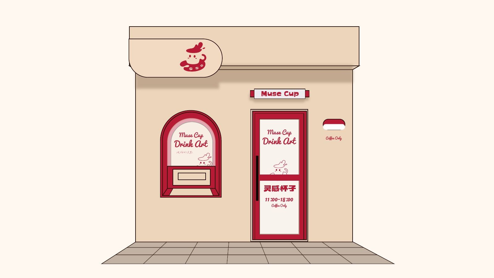
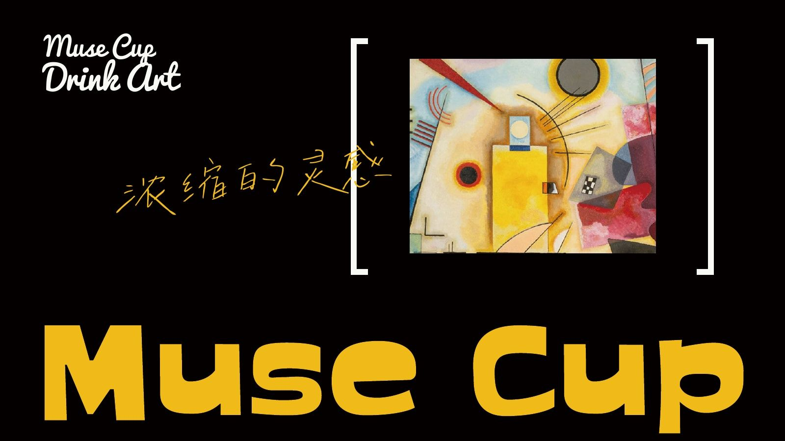